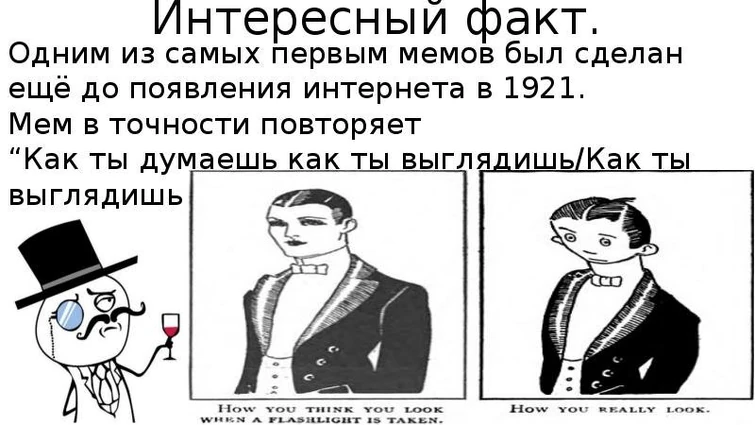
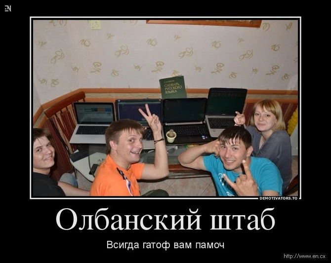
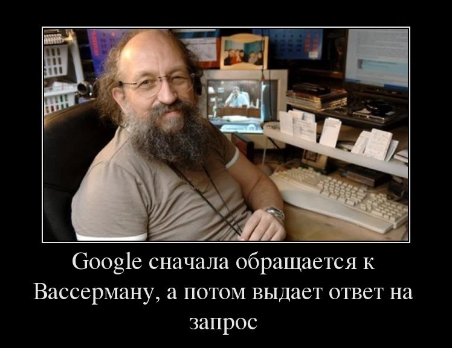

Мемом является любая идея, символ, манера, ситуация или образ действия, осознанно или неосознанно передаваемые от человека к человеку посредством речи, письма, видео, ритуалов, жестов и т. д. Термин «мем» и его понимание были введены эволюционным биологом Ричардом Докинзом в 1976 году в книге «Эгоистичный ген». Докинз предложил идею о том, что вся значимая для культуры информация состоит из базовых единиц — мемов, точно так же как биологическая информация состоит из генов; и так же как гены, мемы подвержены естественному отбору, мутации и искусственной селекции. На основе этой идеи Докинза возникла дисциплина меметика, в настоящее время имеющая спорный научный статус[1][2].
Олбанский язык Своеобразный «прото-мем»: один из первых в Рунете. Суть проста – исказить русские слова до неузнаваемости. Именно отсюда пошли слова: «аффтар жжот», «бугага», «многабукаф», «ржунимагу» и так далее. В нулевых так было довольно модно общаться в Рунете, а пришло это из «Живого Журнала».
Участник интеллектуальных шоу несколько раз становился героем Рунета. Мемный дебют случился в 2007 году, когда его имя перевели на олбанский – Онотоле. Онотоле регулярно использовали в контексте Упячки. Иногда с Анатолием Вассерманом приключаются мемные «реинкарнации»: съемка в клипе Ольги Бузовой и в шоу «Что было дальше». Основные темы шуток – эрудированность и необычный внешний вид Вассермана.
Борщ с капусткой, но не красный Все началось с этого видео, где молодый человек по имени Никита Литивнков произнес именно эту фразу. Эта цитата – «Борщ с капусткой, но не красный» – разлетелась на цитаты и стала основой для целого пласта мемов. Кто же знал, что смешной отрывок из интервью 2008 года станет таким популярным.
САМЫЙ ПЕРВЫЙ МЕМКотлеты с пюрешкой Мем про котлеты с пюрешкой не стал бы популярным до ремикса блогера Enjoykin, который сделал диалог из сериала «Улицы разбитых фонарей» по-настоящему смешным в 2016 году. Это породило множество пародий и, конечно же, споров, что как гарнир лучше для котлет: пюре или все же макароны?
Волк в цирке не выступает Так называемая постирония в чистом виде. Мемы с волками создают, чтобы поиронизировать над якобы глубокомысленными «пацанскими» цитатами. Такие пародии особенно популярны в последнее время, а картинки с волками от пользователей можно найти в комментариях к постам.
Как тебе такое, Илон Маск? Это целая серия мемов, где иронизируют над изобретениями и достижениями известного американского миллиардера Илона Маска. Вся соль мема – бытовые лайфхаки и российская действительность, которые на самом деле выглядят смешно и порой нелепо. Вот парочка примеров.

«Ты втираешь мне какую-то дичь» Когда вам кажется, что собеседник вас обманывает, то попробуйте сказать ему именно это. Этот мем, а точнее, цитата пришла к нам из ролика 2015 года и живет в русском языке вне контекста мема. Если говорить максимально корректно, то в этом видео двое человек рассуждают о бизнес-процессах и формировании стоимости товара.
«Это фиаско, братан» У животных всегда был большой «мемный» потенциал. Это и смогла доказать собака, которая провалилась в реку. Этот момент был запечатлен на видео, который моментально стал вирусным. С тех пор, когда друг или знакомый терпит неудачу, стало модным говорить эту фразу. Мем форсили, как говорится, везде, где только возможно.
переходи на 2 страницу